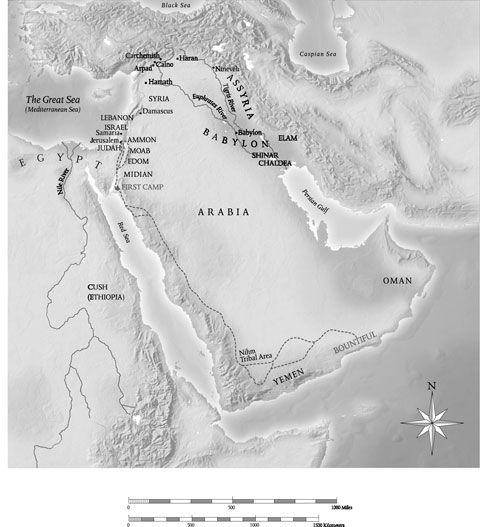

Lehi was faithful in fulfilling his calling to teach of the Messiah and call his people to repentance. They wanted to kill him because of his teachings. Objections to true teachings are usually a cover-up for not wanting to abandon sins.
The Lord warned Lehi in a dream to take his family and depart into the wilderness. Why Lehi? What qualified this citizen of the kingdom of Judah, a descendant of Manasseh, to lead a colony of Israelites through the wilderness to a new promised land? Lehi understood and could guide a diverse society. Members of tribes other than Judah had taken up residence in the land of Jerusalem years before. First Chronicles 9:3 notes, “In Jerusalem dwelt of the children of Judah, and of the children of Benjamin, and of the children of Ephraim, and Manasseh.’’ Lehi, Laban, and Ishmael were all from the tribes of Joseph.
The scriptural record contains hints that Lehi was wealthy (1 Nephi 2:4; 3:16, 22). The Mediterranean world was alive with mercantile activity in this period of time, with Syria and Canaan serving as a hub of sea and land commerce at the place where continents and cultures came together. Caravans traversed Judah from all directions: side roads off the coastal highway and the King’s Highway; the distant Frankincense Trail; pilgrims’ highways and trade routes connecting Moab, Edom, and Arabia with Gaza and Egypt. Lehi could have been a trained and experienced caravaneer and trader. He knew what provisions to prepare and what route to take. Knowing how God has worked in other periods of history, we believe it is not unlikely that he selected a man who, in addition to his spiritual maturity and responsiveness, was already adapted to the particular task at hand, in this case desert travel and survival. He was the right man for the right time. 2
Note
^2. Nibley, Approach to the Book of Mormon, 45–74.
Lehi and his family abandoned all unnecessary possessions and gathered together appropriate provisions for an indefinite period of travel in the desert. Besides the tents especially mentioned, they would need food, emergency water, extra clothing, bedding, cooking equipment and eating utensils, weapons, and pack animals, probably camels.
Lehi and some family members were willing to live the law of sacrifice, as outlined in Lectures on Faith: “A religion that does not require the sacrifice of all things never has power sufficient to produce the faith necessary unto life and salvation. ... The faith necessary unto the enjoyment of life and salvation never could be obtained without the sacrifice of all earthly things.” 3
The word wilderness occurs more than three hundred times in the Book of Mormon and may at some later time in the Western Hemisphere refer to the thick forests or jungle, but it does not mean lush vegetation in reference to Judah and its neighboring deserts. Two Hebrew terms for wilderness are midbar and jeshimon. Midbar is generally land to the east of the central hills, east of the agricultural fields, out into the rain shadow, with a sparce vegetation. These are tracts for pasturing flocks. Jeshimon is the desolate wasteland beyond, where little rain falls. The Judean desert through which Lehi and his family journeyed is at first midbar and then jeshimon. It is known scripturally as a place of flight and refuge. It is a frightening place for the uninitiated.
In recent years, researchers have ventured to describe the route Lehi and his family took from Jerusalem to the Red Sea. Gospel scholar Sidney B. Sperry wrote as follows: “As for a route to the Red Sea, they had two choices: they could go either directly south of Jerusalem by the road through Hebron and Beersheba and thence through the great wilderness to the northern tip of what is now the gulf of Aqaba, or they could go directly east across the Jordan until they struck the ancient ‘King’s Highway’ and then proceed south, or nearly so, until the Gulf of Aqaba was reached. Lehi probably used the western route.” 4 Lynn and Hope Hilton expanded the possibilities to three: (1) eastward from Jerusalem through the Judean wilderness to the plateau on the eastern side of the Rift Valley to the King’s Highway; (2) southward from Jerusalem, past Hebron and Beersheba, and then eastward to join the Rift Valley, called the Arabah; or (3) straight east to the northern end of the Dead Sea, past Qumran, En Gedi, Masada, and on south to the Red Sea.
The Hiltons considered the first option, the King’s Highway, unlikely because of passage through foreign lands with border complications, taxes, and so on. They also saw the second option as improbable because the route remains in the hill country, near population centers, instead of entering the wilderness as the account says. The Hiltons, therefore, concluded that the third option was the likely route. 5
Based on our personal experience of walking from Jerusalem to the Red Sea, it seems unlikely to us that Lehi’s family would have used the King’s Highway or that they would have journeyed straight southward through populated centers, such as Hebron and Beersheba. The account specifically points to immediate entry into the wilderness. The Hiltons’ preferred route (east to the area of Qumran and then south) is also unlikely, however, as the fault escarpment of the Rift Valley drops down dramatically to the waters of the Dead Sea and allows no passage to the south. There was no evidence of a road along the northwestern shore of the Dead Sea before the Israelis cut and paved one in 1967.

We believe that a more likely course for Lehi’s journey is southeast out of Jerusalem toward Tekoa and then along an ancient road to En Gedi (called the cliff or ascent of Ziz in 2 Chronicles 20:16), and thence southward through the Rift Valley and Arabah. An alternate route could have been from Tekoa southward, passing between the villages of Juttah and Carmel, down into and across the eastern Negev eastward to the Arabah.
Notes
^3. Lectures on Faith, 66.
^4. Sperry, Book of Mormon Compendium, 97–98.
^5. Hilton and Hilton, In Search of Lehi’s Trail, 38.
Having arrived at the shores of the Red Sea, Lehi and his party decided to continue on for another three days, after which they established camp “in a valley by the side of a river of water.” The phrase “river of water” seems redundant to western ears, since we are accustomed to thinking of rivers as consisting only of water. In the Near East, however, most rivers are not perennial but contain water only in the rainy season, for relatively few days of the year. Usually such a riverbed is dry and sandy and quite passable for travel. If Lehi’s family pitched their tents near a flowing stream, that may tell us something about what time of year it was; perhaps it was spring, the time of winter runoff.
Lehi, along with all other prophets, held the Melchizedek Priesthood. 6 Lehi’s family had no Levitical or Aaronic Priesthood holders among them. Such priesthood functions as offering sacrifices (Hebrew corban), though usually executed under the direction of Aaronic or Levitical Priesthood in biblical times, could also be carried out by those who held the higher priesthood, which comprehends all lower powers (D&C 107:8). Lehi was authorized to perform sacrifices by virtue of the Melchizedek Priesthood he held.
Lehi built an altar of stones to make an offering and give thanks. It was an altar of unhewn stones as stipulated in Exodus 20:25. The wording is intentional, again showing the Book of Mormon to be translated from an ancient Semitic record. It was not a “stone altar,” which might allow for cut, fitted stones, but an “altar of stones.”
Lehi then began naming various geographical features around the camp. All hills, rock outcroppings, valleys, and other topographical details were and are given names in the Near East. The ancient Hebrew people loved imagery and figures of speech. The most powerful way to illustrate a truth was to find something in the human experience or conduct that corresponded to something in nature. If only Laman could be like this temporary river, or even better, like a perennial river, continuously flowing toward the source of righteousness! Many parents have wished that blessing for children experiencing difficulties. Likewise, the prophet Amos pleaded with northern Israelites to “let judgment run down as waters, and righteousness as a mighty [or everflowing] stream” (Amos 5:24). The two prophets wished that their people would be more constant and stable in their devotion and loyalty to God and his purposes.
Note
^6. Joseph Smith [manual], 109.
Three of our favorite words in the Book of Mormon are firm, steadfast, and immovable. On 31 May 1994, hurricane-force winds swept through Utah’s Wasatch Front with destructive results, especially in Provo. Brigham Young University equipment clocked the winds at 121 miles per hour. Though only five minutes in duration, the winds ripped apart or felled upwards of five thousand trees. Provo City announced within a few days that the total loss approached $9 million. One house had four very tall pine trees lying flat in the yard and out into the street, with huge but shallow root systems exposed. There’s the gospel lesson: it is not enough to grow tall and broad and beautiful. Shallowness is perilous. We must sink deep roots and be solidly planted to withstand the storms of life; be firm, steadfast, and immovable—enduring, solid, and stable.
These verses give us insights into the character of Lehi’s four sons. Laman and Lemuel are portrayed as stubborn, hard-hearted, lovers of money, faithless, and spiritually weak. Nephi and Sam, on the other hand, are humble seekers of knowledge and of God, faithful, and obedient to parents. The latter two sons are exemplary, deserving of being emulated, which, since we all need role models, is one of the main purposes for the painstaking engraving of the metal plates—to preserve for us in modern times some examples or patterns for our lives. President Heber J. Grant wrote: “I read the Book of Mormon as a young man and fell in love with Nephi more than with any other character in [secular] or sacred history that I have ever read of, except the Savior of the world. No other individual has made such a strong impression upon me as did Nephi. He has been one of the guiding stars of my life.” 7
Consider the four brothers. The marvel is not that some complained about the hardships in leaving all and journeying into the wilderness but that others did not! Conditions were such that anyone could have murmured. Murmuring may be defined as half-suppressed or muttered complaint, grumbling behind the scenes rather than being openly critical, or disloyal.
What was the reason for Nephi’s amazing ability to press forward positively and not join in the grumbling and rebellion? Nephi wanted to know the things of God; he prayed, and the Lord visited him and softened his heart—which suggests the possibility that his heart was somewhat hard before.
God raises up the young, those malleable and teachable, not set in their ways, to accomplish tasks that will confound the wise—allowing the “weak things of the world” to “break down the mighty and strong ones” (D&C 1:19).
Faith and faithfulness are always rewarded. Nephi and all the others were called upon to make a great sacrifice, to leave behind practically all they had known; but the Lord promised that they would eventually possess more and greater blessings. We of modern times struggle with that principle also. One of the most dangerous problems we face is wanting immediate gratification. Few people, it seems, believe in postponement—if we want something, we want it now. Adam and Eve sacrificed a pleasant existence in the Garden of Eden for something ultimately and infinitely better, though immediately harder. Moses sacrificed prestige in a kingly court for the noble task of suffering the sands and complaints of Sinai. Elijah, Amos, Isaiah, Jeremiah, and all the other prophets sacrificed comfort and security to fulfill a difficult duty with eternal rewards.
In the Lord’s economy, whenever we give up something or go without, we find ourselves in eventual possession of more and greater. During the tests of his faithfulness, Job lost almost everything he had; his story concludes, however, with a simple note that he was blessed in the end with more than he had in the beginning. Lehi’s family sacrificed their possessions, their riches, to follow the old patriarch into the great Arabian desert and over the sea; but after their journey, they possessed a land of amazingly abundant wealth. The promises of the Lord to Lehi and to Nephi, as with our own patriarchal blessings, must have encouraged and sustained them through the sometimes bitter trials they had to endure along the way.
As Lehi and his family traveled through the Rift Valley and near the Red Sea, perhaps they were inspired by the example of the prophet-hero Moses, who led their ancestors through some of the same terrain to their promised land. Lehi’s wilderness journeys were shorter in time but greater in distance.
Note
^7. Grant, “Dream, O Youth!” 524.
Because God is a personal God, tailor-made pains, hardships, trials, obstacles, or adversities may come into our lives to stir us up to remember God. See also Helaman 12:1–3.